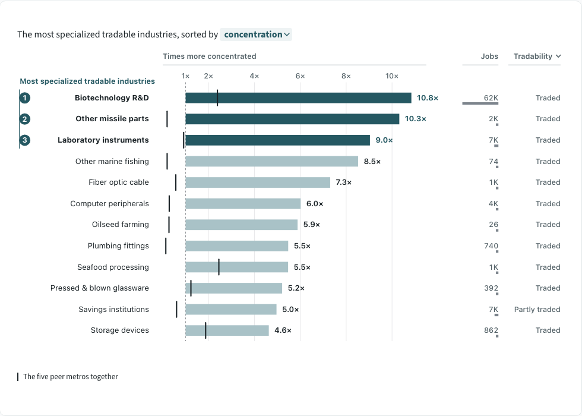

The ranking shows the metro's twelve most specialized tradable industries, every one above 1×, the national rate. Its bars rise from 1×. The black mark is the five peer metros together, and for most of these industries the peers sit below the national rate: 0.17× for missile parts, 0.14× for plumbing fittings. Those marks land left of where the bars start, so they read as outside the chart. Four ways to give them a place, each drawn here from the real 2024 data.
The axis is 0 to 11×, the bars start at 1×, and eight of the twelve peer marks fall in the strip between the names and the bars.

The plot and the bars both start at 0. A dashed line at 1× says where the national rate is, so every bar still reads as above it. The peer marks fall inside the plot, between 0 and 1×.
The axis runs from 0.1× to 15× on a log scale, the way the "Against peers" view already does. The bars still rise from 1×, the national rate, which sits about a third of the way in; the shaded side to its left is "below the national rate", where most peers sit. Equal steps on the axis are equal multiples, so the distance from a peer mark to the end of its bar is how far the metro leads its peers.
On the same log axis, each industry is a filled dot for the metro and an open dot for its peers, joined by a line. The line's length is the lead over the peers. No bars at all.
The bars stay exactly as they are and the mark goes. The comparison moves to a column beside Jobs: how many times as concentrated the metro is as its peers, with a small bar, as the Jobs column has.
2 keeps the bars, keeps the national rate as the line the bars rise from, and gives the peers a true place, with the gap between the mark and the bar end meaning the same thing as the "Against peers" order.
1 is the smallest change but crowds the low marks together. 3 is the clearest picture of metro against peers but gives up the bars and the morph into them. 4 is the simplest chart but drops the peers' own level.